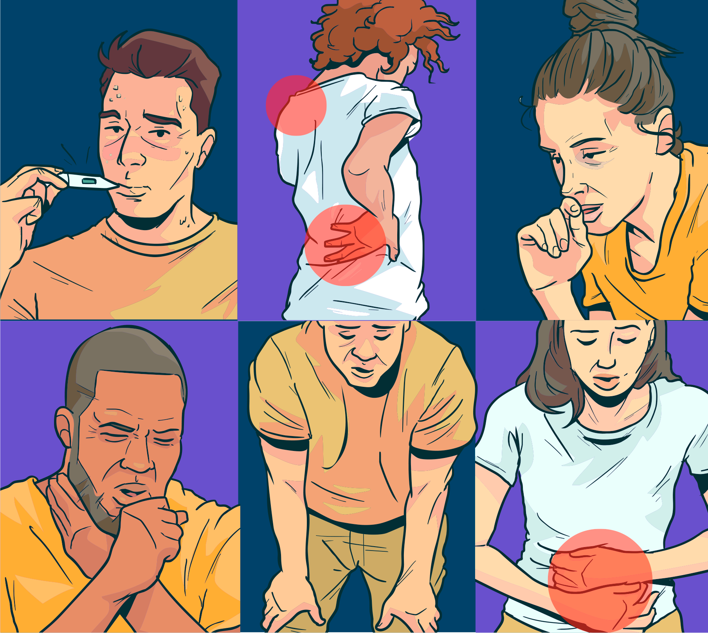

Nos casos sintomáticos, foram observadas as seguintes alterações:
- febre (≥ 37,8 ºC);
- dores no corpo (músculos);
- cansaço;
- incômodo na garganta;
- sintomas respiratórios diversos, tais como secreção ou congestão nasal, tosse seca, falta de ar, etc.;
- sintomas gastrointestinais, como diarreia (mais raros).